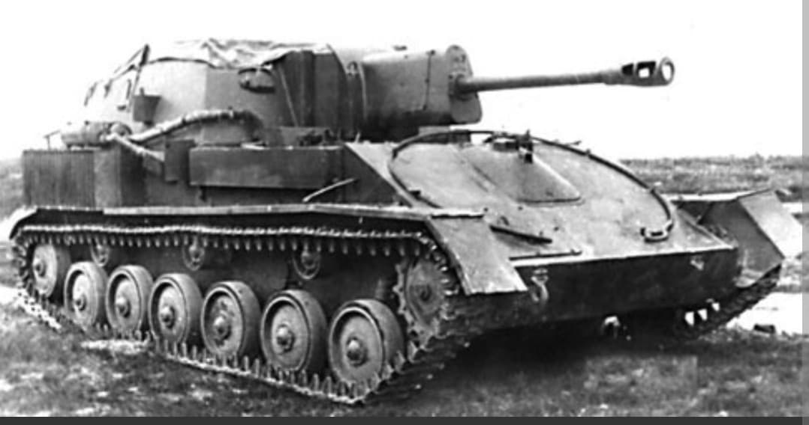
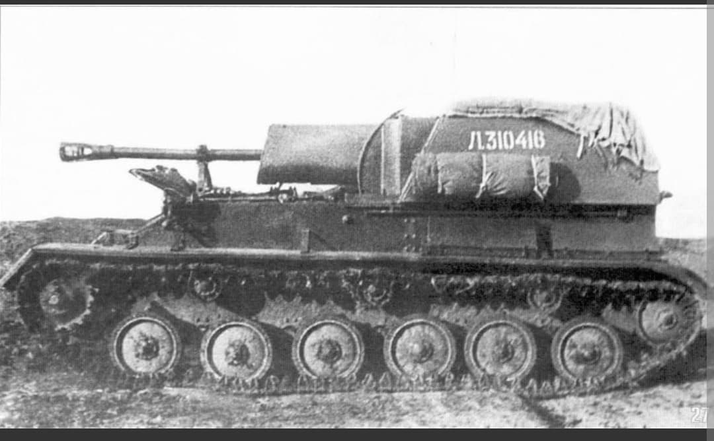
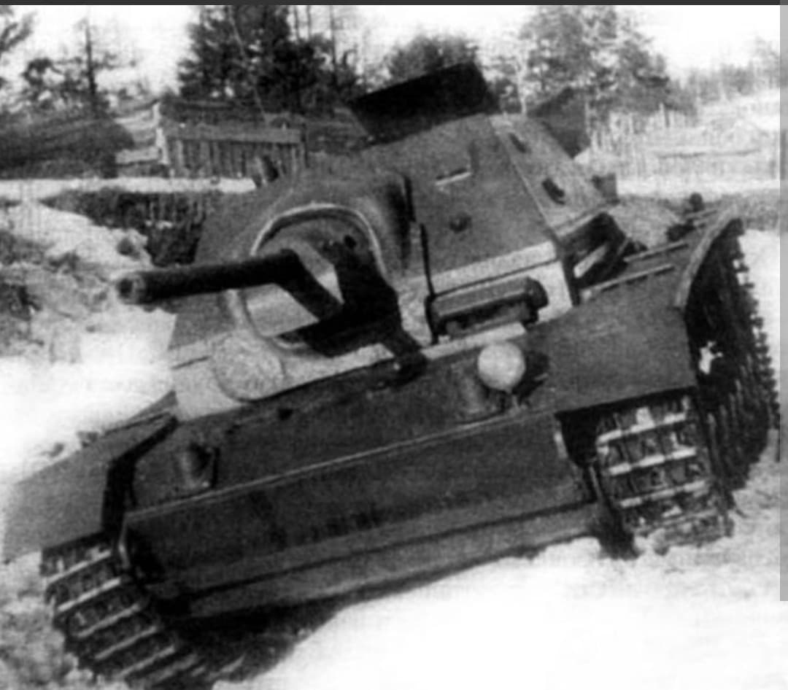

Le canon d'assaut léger soviétique polyvalent et omniprésent sur le Front de l'Est

Le SU-76 (Samokhodnaya Ustanovka 76) est un canon automoteur léger développé par l'Union soviétique durant la Seconde Guerre mondiale. Produit à plus de 14 000 exemplaires, il s'agit du blindé soviétique le plus fabriqué du conflit après le célèbre char moyen T-34.
Apprécié pour sa polyvalence, il combinait le châssis rallongé du char léger T-70 avec le redoutable canon de campagne de 76,2 mm ZiS-3, offrant un soutien d'artillerie mobile indispensable à l'infanterie de l'Armée rouge.
Développé fin 1942 à l'usine n°38 de Kirov, le SU-76 répondait au besoin urgent d'apporter un appui-feu direct et mobile aux troupes d'infanterie. La version principale, le **SU-76M**, adoptait une superstructure ouverte sur le dessus et l'arrière, améliorant l'aération lors des tirs et la visibilité de l'équipage.
D'une masse contenue de **10,6 tonnes**, le SU-76M était propulsé par deux moteurs 6-cylindres GAZ-203 en ligne totalisant 170 ch. Son armement principal, le canon **76,2 mm ZiS-3**, tirait une vaste gamme de munitions (explosives, perforantes, shrapnels), lui permettant de traiter aussi bien des fortifications que des véhicules blindés légers et moyens.

Faisant ses débuts opérationnels lors de la **Bataille de Koursk** à l'été 1943, le SU-76 s'est rapidement imposé comme le véhicule d'appui rapproché standard des régiments d'artillerie automotrice légers.
Surnommé affectueusement « Suka » (la chienne) ou « Golondras » par ses équipages en raison de sa maniabilité et de sa capacité à franchir les terrains marécageux, le SU-76 excellait dans le tir direct contre les nids de mitrailleuses, les bunkers et le soutien urbain lors de la libération de l'Europe de l'Est et de la bataille de Berlin en 1945.

Facile à produire, économique et rustique, le SU-76 a permis à l'Armée rouge de motoriser à grande échelle son artillerie de soutien direct.
Après 1945, de nombreux exemplaires ont été fournis aux pays alliés de l'URSS et ont participé à d'autres conflits majeurs, notamment la **guerre de Corée**.
Page du Musée HOP WW2 – Section Véhicules Terrestres Soviétiques